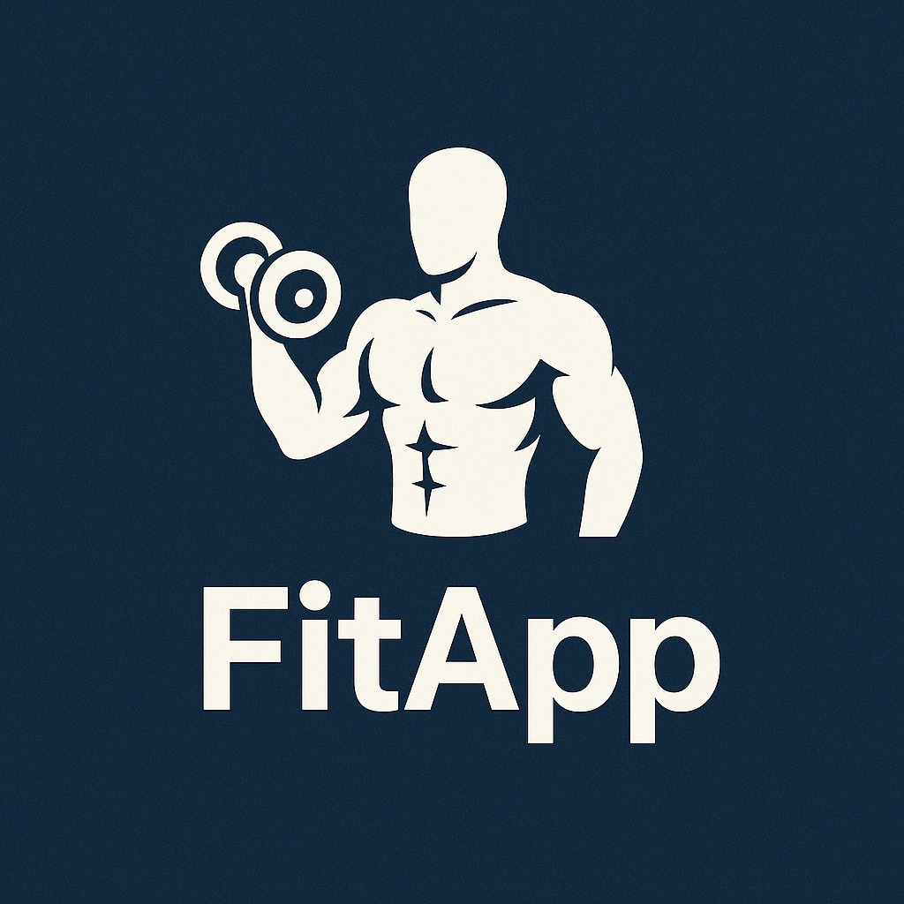

FitApp
Proje Açıklaması
FitApp, kullanıcıların fiziksel hedeflerine ulaşmalarını desteklemek için geliştirilmiş, modern ve kullanıcı dostu bir mobil fitness uygulamasıdır. Uygulama, egzersiz rutinlerinin planlanmasından hedef kilo takibine kadar birçok kişiselleştirilmiş özellik sunar. Sağlıklı yaşamı sürdürülebilir kılmayı amaçlayan bu uygulama, kullanıcıların motivasyonunu artırmak ve düzenli takip yapabilmesini kolaylaştırmak için tasarlanmıştır.
Öne Çıkan Özellikler
- ✅ Kişiselleştirilmiş antrenman planları
- 💪 Egzersiz kategorilerine göre filtreleme
- 🎯 Hedef kilo belirleme ve güncel kilo takibi
- 📈 Haftalık ve aylık ilerleme grafikleri
- 🔔 Hatırlatıcı bildirim sistemi ile düzenli motivasyon
- 🌗 Hafif ve koyu tema desteği
Kullanılan Teknolojiler
- Kotlin: Modern ve güvenli Android uygulama geliştirme dili
- Jetpack Compose: Declarative UI yapısı ile hızlı ve etkili arayüz oluşturma
- MVVM Mimarisi: Kodun sürdürülebilirliğini ve okunabilirliğini artıran yapı
- Retrofit: REST API ile haberleşme katmanı
- Room Database: Yerel veri saklama
- Android Studio: Geliştirme ortamı
Uygulama Galerisi
Geliştirici Notları
Bu proje ile mobil geliştirme sürecinde Jetpack Compose kullanımı, state yönetimi, REST API bağlantıları ve kullanıcı deneyimi odaklı tasarım konularında derinlemesine pratik yaptım. Kullanıcılardan gelen geri bildirimlere göre düzenli güncellemelerle projeyi geliştirmeye devam ediyorum.
İleride Planlanan Geliştirmeler
- 🌍 Çok dilli destek
- 📅 Haftalık egzersiz programı önerileri
- 🤖 Yapay zeka ile hedef uyumlu plan önerileri
- 🧘 Meditasyon ve esneme modülleri